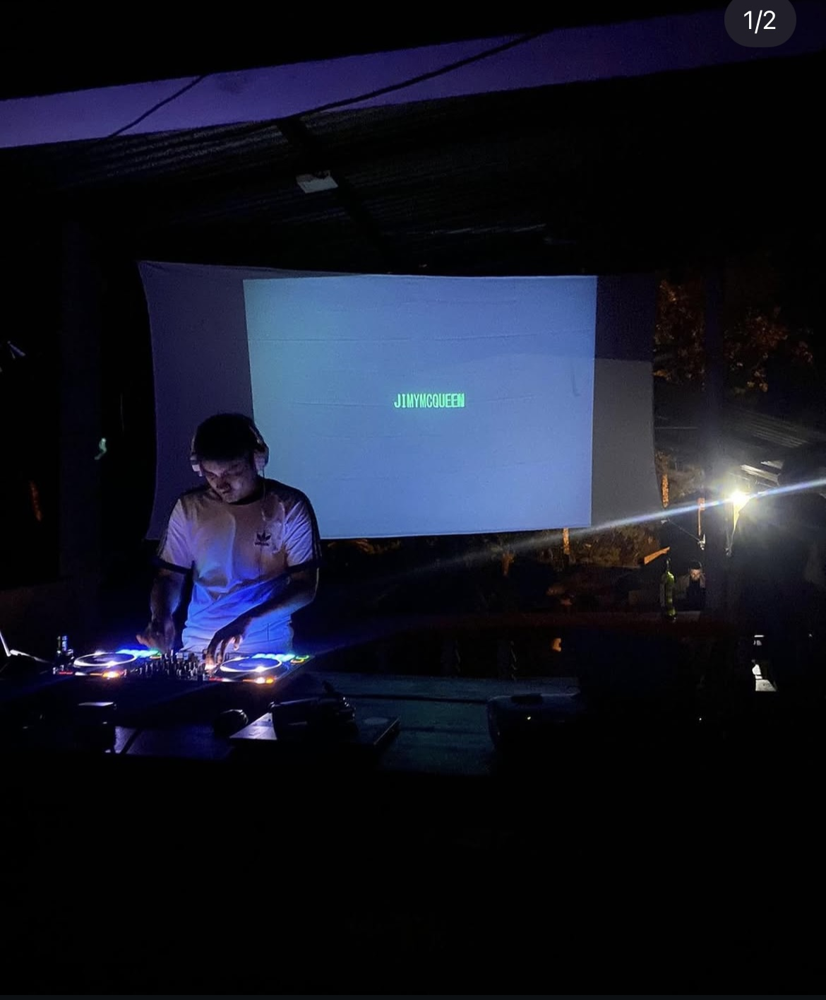
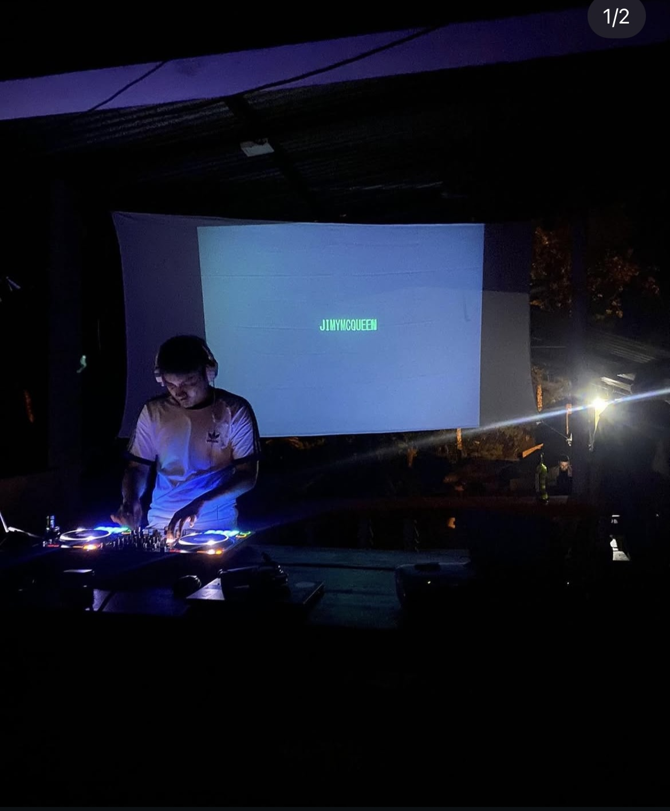

Jaime Andres Martinez Cuellar
Estudiante de Derecho | Músico | Productor Musical Independiente
Sobre Mí 😀
Mi nombre es Jaime Andres Martinez Cuellar, soy estudiante de noveno semestre de Derecho y músico independiente. Me apasiona el estudio del Derecho Constitucional, los Derechos Humanos y el arte. He participado en diferentes bandas de rock de la ciudad de Florencia - Caquetá y tengo mi proyecto independiente como productor musical de música electrónica.
 10.10.51 p.m..png)
Formación Académica 📓
| Formación / Certificación | Institución | Año / Estado |
|---|---|---|
| Estudiante de Derecho | Universidad del Cauca | 2021 – Presente |
| Certificado en Investigación Formativa | Universidad del Cauca | 2024 |
| Diplomado en Contratación Estatal | ESAP | 2024 |
| Bachiller | Colegio COMFACA | 2018 |
| Certificado Inglés B2 | Colombo Americano | 2016 |
| Producción musical digital | Autodidacta | En curso |
| Instrumentos musicales (guitarra, batería, piano) | Autodidacta | En curso |
Experiencia Musical 🎵
Fundé Cronicida con mis amigos de la infancia, un proyecto de rock y punk activo entre 2013 y 2015. En 2018, hice parte de CAVERNA, una banda hardcore punk. En ambos proyectos toqué la batería, fui arreglista y autor de algunas canciones. También he trabajado como solista bajo los nombres Jmrtnz y Jimmy McQueen, explorando sonidos techno y realizando presentaciones como DJ. He producido pistas, escrito letras y colaborado con el colectivo Deutschland en Florencia - Caquetá. Enfocado en:
- Producción de beats, grabación y mezcla en DAW
- Ejecución instrumental en vivo
- Distribución independiente
▶️ Escúchame en:
 

Experiencia Laboral 🧑🏽💼
A&G Abogados:⚖️ Dependiente judicial entre 2022 y 2024, con enfoque en temas laborales, seguridad social y pensiones.
Mis Hobbies 🗺️
- Tocar instrumentos
- Producción musical
- Leer filosofía
- Hacer ejercicio
- Aprender nuevas cosas
- Ver peliculas
- Viajar
Tareas Prioritarias 📋
- Finalizar mi carrera universitaria
- Adelantar estudios técnicos en producción musical
- Practicar piano y DJ sets
- Culminar el bootcamp de programación virtual
Horario Semanal 🔁
Horario IX Semestre 2025 - Jaime Andrés Martínez Cuellar
| Día / Hora | Lunes | Martes | Miércoles | Jueves | Viernes |
|---|---|---|---|---|---|
| 7 AM - 9 AM | Sucesiones | Seminario III | Sucesiones | ||
| 9 AM - 11 AM | Criminología | Gym | |||
| 11 AM - 1 PM | Electiva III - Nilsa | Ética | Ética | Criminología | |
| 1 PM - 2 PM | |||||
| 2 PM - 6 PM | Gym | Gym | Gym | Gym | Consultorio II |
| 6:30 PM - 9:30 PM | Programación | Programación | Programación | Programación | Programación |
Redes Sociales 📸
Contacto 🪪
Para consultas jurídicas:
jaimemartinez@unicauca.edu.co
Para colaboraciones musicales o presentaciones:
maratinezzmc@gmail.com
Teléfono:
+57 320 827 6509
Envíame un mensaje 📩
¿Tienes dudas o te interesa alguno de mis servicios? Llena el formulario y me pondré en contacto contigo lo antes posible.